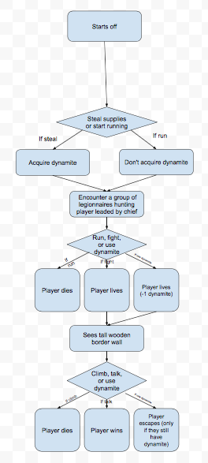

Scratch Game
Breakdown
Play here:https://scratch.mit.edu/projects/144663330
Description: In this game, you have to defeat the enemy ghoul as the breakdancer and cat in turn-based combat. The user is scored after attacking, with damage dealt being displayed onscreen. Randomness occurs whenever you attack or take damage. The game gets difficult when the ghoul's HP is less than 125, as it begins to heal after the player's turn is over, or it lowers the damage it takes from the player characters. The game ends when time is over, the player defeats the enemy, or the player is defeated.
Reflection: I chose to create a turn-based RPG since it would be easy to program and it doesn't require many cosmetic changes. Two successful points would be the damage detection and commands. Two obstacles would be getting the code to properly work and characters attacking when it's not their turn. If I had more time, I would work in better attack animations and more attack types.
This script is vital to the program as it indicates how much damage the enemy has taken and also controls when the game ends.
The "Defend" block
Create Your Own Adventure
Escape Lothric
In this medieval Create Your Own Adventure, you are a disgraced knight on the run from the king's soldiers. Choose to deal with your enemies head on, or avoid direct conflicts and escape the kingdom safely.
2 out of the 3 endings in this program are achieved iteratively. The program repeats itself automatically after it ends. Multiple options result in the death of the protagonist, so that is why it does so. The one ending that is achieved incrementally requires that you acquire a key item through one of the earlier choices. Since this key item is also used at an earlier scene, we decided to make a value for it so it could no longer be used and the ending requiring it can't be achieved. Organizing our scenes into functions is procedural abstraction because the readers know their decisions advance the story, but not how the program does it. The advantage of abstracting scenes into functions is that they allow you to come up with more decisions as to how the reader achieves each scene, which could also result in more scenes.One story that I liked was Phantom Blood because it retold the story of Jonathan and Dio in its own way, although influenced by the reader's decisions.